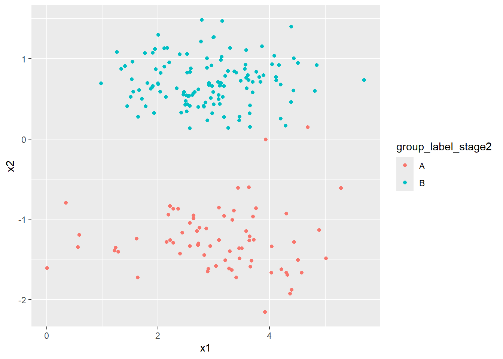

Chapter 15 Machine learning
Learning Objectives
- Explain the main branches of machine learning and describe examples of the types of problems typically addressed by machine learning.
- Explain and apply high-level concepts relevant to learning from data.
- Describe and give examples of key supervised and unsupervised machine learning techniques, explaining the difference between regression and classification and between generative and discriminative models.
- Explain in detail and use appropriate software to apply machine learning techniques (e.g. penalised regression and decision trees) to simple problems.
- Demonstrate an understanding of the perspectives of statisticians, data scientists, and other quantitative researchers from non-actuarial backgrounds.
15.1 Chapter: Machine Learning
Machine learning (ML) describes a set of methods by which computer algorithms are developed and applied to data to detect and exploit patterns, primarily focusing on making predictions rather than understanding the statistical properties of a population. The field’s recent surge in importance is largely due to the increased availability of “big data” and a rapid rise in computing power. For machine learning to be a useful approach, three conditions must generally apply: a pattern should exist in the data, this pattern cannot be practically defined mathematically by traditional methods, and relevant data must be available.
15.1.1 1. Main Branches of Machine Learning and Types of Problems Addressed
Machine learning techniques are broadly categorised into several branches:
- Supervised Learning: Associated with predictive models where the output is specified. The algorithm is given a specific target to aim at, which can be numerical or categorical, and it attempts to converge on parameters that provide the best prediction.
- Examples of Problems:
- Predicting whether a person will default on a loan.
- Classifying the risk for motor insurance policyholders using in-car monitoring devices.
- Identifying marker genes associated with particular medical conditions.
- Handwriting recognition (turning handwriting into computer text).
- Examples of Problems:
- Unsupervised Learning: Operates without a specified target outcome. The algorithm aims to identify patterns or information within unlabelled data.
- Examples of Problems:
- Identifying clusters within data, such as grouping car insurance policyholders based on geographical area, premium paid, and claims experience to form homogeneous groups.
- Market basket analysis (identifying items commonly purchased together from retail transactions).
- Text analysis (e.g., analysing common word combinations for predictive text suggestions).
- Examples of Problems:
- Semi-supervised Learning: Involves using a mixture of supervised and unsupervised learning. For instance, cluster analysis could identify groups, which are then labelled with a variable, followed by a supervised classification algorithm to predict class membership.
- Reinforcement Learning: The learner is not given a target output directly but uses input data to choose an output. It receives feedback (a “reward”) on how well it performed and adjusts its actions to maximise the total reward through trial and error.
General Examples of Problems Addressed by Machine Learning: Beyond actuarial applications, machine learning solves various real-world problems: * Targeting advertising at consumers using websites. * Locating stock within supermarkets to maximise turnover. * Forecasting election results. * Spam filtering (identifying and removing unwanted emails). * Face recognition to identify known criminals. * Recommending items to purchase on online shopping sites. * Recognising voice commands (e.g., Siri, Cortana, Alexa).
15.1.2 2. High-Level Concepts Relevant to Learning from Data
The process of learning from data in machine learning involves several key high-level concepts:
- Target Function and Hypothesis: There is an underlying, often unknown, “target function” (\(f\)) that maps a set of input variables (or “features”) to an output (\(y\)). The goal of machine learning is to develop a “hypothesis” (\(g\)) that approximates this unknown target function.
- Data Collection and Preparation: Before model building, data must be assembled in a computer-readable format (e.g., rectangular format with one row per case and one column per variable). This stage involves cleaning data, replacing missing values, and checking for errors. While some Exploratory Data Analysis (EDA) is done, extensive EDA might be avoided to prevent influencing model choice.
- Feature Scaling: For certain machine learning techniques, it is crucial that input variables are on a similar scale for effective operation.
- Splitting Data (Training, Validation, Testing):
- Training Data: Used to fit and train the model, where the algorithm attempts to predict known outcomes.
- Validation Data: A subset used to evaluate the model’s performance on unseen data and, critically, to set “hyperparameters”.
- Test Data: A final, withheld portion of the data, not used during training or validation, to provide an unbiased assessment of the model’s performance on out-of-sample data. A common split is 60% training, 20% validation, 20% testing.
- Parameters vs. Hyperparameters:
- Parameters: Internal to the model; their values are estimated directly from the data during training and are integral to making predictions. For example, the coefficients (weights) in a regression model.
- Hyperparameters: Higher-level attributes of the model that cannot be estimated from the data. They are typically set by the practitioner (e.g., using heuristic guidelines) and are crucial for the model’s predictive success. Examples include the number of covariates to include, the number of categories in a classification, or the “learning rate”, or the number of clusters in a K-means algorithm.
- Overfitting and Regularisation:
- Overfitting: A significant danger where a model, especially one with many parameters or features, learns the “noise” or idiosyncratic characteristics of the training data too well, failing to generalise effectively to new, unseen data. This leads to the identification of patterns that are specific to the training data and do not generalise.
- Regularisation (Penalisation): A technique to reduce overfitting in highly parameterised models. It involves adding a “cost for model complexity” (a penalty function) to the loss function that the model seeks to minimise. This encourages the model to produce parameter estimates closer to a set of target values or to simplify the model, balancing adherence to data with a desired level of smoothness. Common types include Ridge regression (\(\sum w_j^2\)) and Lasso regression (\(\sum |w_j|\)), where \(w_j\) are weights.
- Bias-Variance Trade-off: The expected mean squared error (MSE) of a model’s prediction on unseen data can be decomposed into three components: noise (irreducible error), bias, and variance.
- Bias: Error due to simplistic assumptions or the model’s inability to capture the true underlying relationship. A high-bias model might “underfit” the data.
- Variance: Error due to the model’s sensitivity to fluctuations in the training data. A high-variance model might “overfit” the data. ML aims to find a balance in this trade-off, as reducing bias often increases variance, and vice versa.
- Reproducibility: It is essential that any data analysis, including machine learning, is reproducible. This means another researcher can take the same data, follow the described analysis steps, and obtain the same results. Key aspects include fully described and available data, clear documentation of data modifications (feature engineering) and algorithm choices (including parameters and their selection). For stochastic models, using
set.seed()in R ensures the reproducibility of random elements.
15.1.3 3. Key Supervised and Unsupervised Machine Learning Techniques: Regression vs. Classification, Generative vs. Discriminative Models
Machine learning techniques are often distinguished by the nature of their output and the way they model relationships:
15.1.3.1 Supervised Learning Techniques:
- Decision Trees (CART - Classification and Regression Trees):
- A predictive model that partitions data into subsets based on input variables.
- Represented as a binary tree diagram, where a series of questions are asked to split the data until a “leaf” node is reached, which provides the prediction.
- Regression Trees: Output is a continuous numerical value (e.g., the mean value of the target variable in a node). The splitting criteria aim to minimise the squared error cost function.
- Classification Trees: Output is a categorical variable (e.g., the most frequent class in a node). The splitting criteria often use measures like the Gini index.
- Construction commonly uses “greedy splitting,” where the best split is chosen at each stage to maximise the immediate reduction in the loss function. Overfitting can be mitigated by stopping criteria or pruning.
- Bagged Decision Trees (Bagging): Reduces variance by averaging predictions from multiple decision trees. Each tree is trained on a different “bootstrap” sample (random sub-samples with replacement) of the original data.
- Random Forests: An improvement over bagging. In addition to training on bootstrap samples, at each split, only a random subset of features is considered. This further reduces correlation between trees, often leading to better performance (e.g., reduced Mean Squared Error).
- Naïve Bayes Classification:
- A probabilistic classifier based on Bayes’ theorem.
- The “naïve” assumption is that input variables are independent of each other, conditional on the output variable. This simplifies the calculation of the posterior probability \(P(y|x_1, \dots, x_J) \propto P(y) \prod_{j=1}^J P(x_j|y)\).
- Used for classification problems. It can produce surprisingly good results despite its strong independence assumption.
- Penalised Regression (e.g., Penalised Generalised Linear Models): These extend traditional regression models by adding a penalty term to the likelihood function. This helps prevent overfitting and encourages simpler models, making them more robust to noise in the training data.
15.1.3.2 Unsupervised Learning Techniques:
- K-means Clustering:
- Partitions data into K clusters, aiming to minimise the within-cluster sum of squares.
- It’s an iterative algorithm: initial cluster centres are chosen (randomly or with prior knowledge), each data point is assigned to its nearest centre, new centroids are calculated, and points are re-assigned until convergence.
- The “elbow method” (plotting total within-groups sum of squares against K) can help determine an appropriate number of clusters.
- Advantages: simple, flexible, efficient. Disadvantages: not guaranteed to find the optimal set of clusters, requires a reasonable initial guess for K.
- Principal Component Analysis (PCA):
- A dimensionality reduction technique that transforms data into a new set of uncorrelated variables (principal components).
- The principal components capture most of the variance in the original data, simplifying high-dimensional datasets and reducing noise.
15.1.3.3 Regression vs. Classification:
- Regression Problem: Involves predicting a numerical (continuous) output value.
- Example: Predicting a university graduate’s salary at age 40 based on their subject, degree grade, and sex.
- Classification Problem: Involves predicting which category a case falls into (discrete or categorical output).
- Example: Grouping car insurance policyholders based on geographical area, premium paid, and claims experience.
15.1.3.4 Generative vs. Discriminative Models:
This distinction relates to how models approach the task of classification:
- Generative Models: Model the joint probability distribution of the input features (\(\boldsymbol{X}\)) and the output classes (\(\boldsymbol{Y}\)), i.e., \(P(\boldsymbol{X}, \boldsymbol{Y})\). They then use Bayes’ theorem to derive the conditional probability \(P(\boldsymbol{Y}|\boldsymbol{X})\), which is used for classification.
- Example: Naïve Bayes classifiers are generative.
- Discriminative Models: Directly model the conditional probability distribution of the output classes given the input features, i.e., \(P(\boldsymbol{Y}|\boldsymbol{X})\), without explicitly modelling the joint distribution.
- Examples: Logistic regression and Cox proportional hazards models are discriminative.
15.1.4 4. Application of Machine Learning Techniques (e.g., Penalised Regression, Decision Trees) using Appropriate Software
The CS2 syllabus emphasises the use of appropriate computer packages, particularly R, for applying mortality forecasting models and, by extension, machine learning techniques.
15.1.4.1 Penalised Regression in R:
- As noted earlier, penalised regression methods (like Ridge and Lasso) incorporate a penalty into the likelihood function to improve model stability and generalisation.
- In R, these can be implemented by defining a negative log-likelihood function that includes the penalty term, and then using optimisation functions (e.g.,
nlm()for non-linear minimisation) to find the parameters that minimise this adjusted function. - Example: If a maximum likelihood estimate (MLE) of a parameter is \(\hat{\mu}\), penalised regression will influence \(\hat{\mu}\) towards a predefined target value, with the strength of this influence determined by the regularisation parameter.
15.1.4.2 Decision Trees (and ensemble methods) in R:
- Decision Trees: The
treepackage in R can be used to construct decision trees.- You can build a tree to predict a categorical (e.g., flower species) or numerical output based on input features.
plot()andtext()functions are used to visualise the tree structure.- To evaluate, you can predict species for a test dataset and construct a confusion matrix using
table()to compare predicted vs. actual values.
- Bagged Decision Trees and Random Forests: The
randomForestpackage in R is used for these ensemble methods.randomForest()function is used to build these models, specifying the number of trees (ntree) and the number of input variables to consider at each split (mtry).- These models aim to improve predictive performance and reduce variance compared to single decision trees.
- Example: Using the
randomForestpackage to predict survival on the Titanic dataset, comparing actual vs. predicted outcomes using a confusion matrix.
- Naïve Bayes Classification in R:
- While there are specific packages, the concept can be implemented using custom R functions to calculate the required conditional probabilities based on the “naïve” independence assumption.
- Example: Calculating the probability of a whisky being of a certain type given its characteristics (smoky, fruity, colour) using these probabilities.
- K-means Clustering in R:
- The
kmeans()function in R is used to perform K-means clustering. - You can specify the number of clusters (
K) or investigate different values ofKby plotting the “total within-groups sum of squares” (elbow method). - The output provides cluster assignments and cluster centres, which can be analysed and plotted to describe the resulting groups.
- The
15.1.5 5. Perspectives of Statisticians, Data Scientists, and Other Quantitative Researchers
Machine learning involves applying methods to data to solve real-world problems, an area that often overlaps with the work of other quantitative researchers, such as statisticians and data scientists.
- Overlap in Work: Statisticians routinely engage in activities like data mining, data reduction (e.g., Principal Component Analysis), and estimating models like logistic regression, which are also machine learning techniques.
- Differences in Terminology: There are straightforward differences in terminology. For instance, machine learning practitioners talk about “training” a model or hyperparameters, while statisticians might refer to “fitting” a model or “choosing” higher-level parameters. These are essentially different words for the same underlying activities.
- Differences in Aims and Emphasis:
- Machine Learning Focus: Often more concerned with predictive accuracy for new, unseen data. The primary goal is to find an algorithm that can predict outcomes well.
- Traditional Statistics Focus (arguably): Historically, traditional statistics has often been more concerned with inference, understanding the underlying statistical properties of a population, and the significance and size of the fitted parameters (i.e., how much effect parameters have on the final outcome).
- Model Utility and Acceptance: Regardless of the disciplinary background, models are generally more useful if they are easy to explain and are acceptable to regulators or other supervisory bodies. This includes avoiding classifications or discriminations that are perceived as undesirable (e.g., those based on gender).
R Practice
We are managing a portfolio of investments that contains 200 assets. In this portfolio we measure the following features:
- Price-to-Earnings Ratio (“PE”), labelled \(x1\) with \(x1 \sim \mathcal{N}(3,\,1)\)
- Price-to-Book Ratio (“PB”), labelled \(x2\) with 65% of the assets following \(\mathcal{N}(10,\,1)\) and the remaining 35% following \(\mathcal{N}(4,\,1)\)
We replicate this in R as follows:
library(dplyr) # Data manipulation
set.seed(42) # Fix result
portfolio <- data.frame(
x1 = rnorm(200, 3, 1),
x2 = scale(
c(
rnorm(70, 4, 1),
rnorm(130, 10, 1)
)
)
)
glimpse(portfolio)## Rows: 200
## Columns: 2
## $ x1 <dbl> 4.3709584, 2.4353018, 3.3631284, 3.6328626, 3.4042683, 2.8938755, 4…
## $ x2 <dbl> -1.9258826, -1.1653603, -0.8925320, -0.6031994, -1.7225948, -1.6489…Here the scale() function scales each element in the result by subtracting the sample mean and dividing by the sample standard deviation.
Next we want to explore whether these 200 assets can be divided into two clusters which we will label arbitrarily A and B based on the two metrics we have measured, PE (as \(x1\)) and PB (as \(x2\)).
We will first assign the assets evenly into these two clusters:
group_label_stage1 <- c(
rep("A", 100),
rep("B", 100)
)
portfolio <- portfolio %>%
mutate(group_label_stage1 = group_label_stage1)
ClusterACentre <- c(
mean(portfolio$x1[portfolio$group_label_stage1 == "A"]),
mean(portfolio$x2[portfolio$group_label_stage1 == "A"])
)
ClusterBCentre <- c(
mean(portfolio$x1[portfolio$group_label_stage1 == "B"]),
mean(portfolio$x2[portfolio$group_label_stage1 == "B"])
)
glimpse(portfolio)## Rows: 200
## Columns: 3
## $ x1 <dbl> 4.3709584, 2.4353018, 3.3631284, 3.6328626, 3.40426…
## $ x2 <dbl> -1.9258826, -1.1653603, -0.8925320, -0.6031994, -1.…
## $ group_label_stage1 <chr> "A", "A", "A", "A", "A", "A", "A", "A", "A", "A", "…We have:
- The centre of cluster
A, given by \((x1_A,\, x2_A)\) is 3.033, -0.691, and - The centre of cluster
B, given by \((x1_A,\, x2_A)\) is 2.913, 0.691.
Next we want to calculate the Euclidean distance between:
- \((x1, x2)\) and the centre of cluster
A, and - \((x1, x2)\) and the centre of cluster
B.
We will label these distances as dist_A and dist_B respectively.
The Euclidean distance is defined as:
- For
dist_A: \(\sqrt{(x1-x1_A)^2+(x2-x2_A)^2}\), and - For
dist_B: \(\sqrt{(x1-x1_B)^2+(x2-x2_B)^2}\).
dist_A <- sqrt(
(portfolio$x1 - ClusterACentre[1])^2
+ (portfolio$x2 - ClusterACentre[2])^2
)
dist_B <- sqrt(
(portfolio$x1 - ClusterBCentre[1])^2
+ (portfolio$x2 - ClusterBCentre[2])^2
)
portfolio <- portfolio %>%
mutate(
dist_A = dist_A,
dist_B = dist_B
)
glimpse(portfolio)## Rows: 200
## Columns: 5
## $ x1 <dbl> 4.3709584, 2.4353018, 3.3631284, 3.6328626, 3.40426…
## $ x2 <dbl> -1.9258826, -1.1653603, -0.8925320, -0.6031994, -1.…
## $ group_label_stage1 <chr> "A", "A", "A", "A", "A", "A", "A", "A", "A", "A", "…
## $ dist_A <dbl> 1.8210075, 0.7626050, 0.3871328, 0.6067517, 1.09642…
## $ dist_B <dbl> 2.995957, 1.916835, 1.646514, 1.481271, 2.463299, 2…Now we will update the cluster labels (A and B) by assigning to each asset the label of the cluster whose centre is nearest from dist_A and dist_B.
portfolio <- portfolio %>%
mutate(
group_label_stage2 = ifelse(portfolio$dist_A <= portfolio$dist_B, "A", "B")
)
glimpse(portfolio)## Rows: 200
## Columns: 6
## $ x1 <dbl> 4.3709584, 2.4353018, 3.3631284, 3.6328626, 3.40426…
## $ x2 <dbl> -1.9258826, -1.1653603, -0.8925320, -0.6031994, -1.…
## $ group_label_stage1 <chr> "A", "A", "A", "A", "A", "A", "A", "A", "A", "A", "…
## $ dist_A <dbl> 1.8210075, 0.7626050, 0.3871328, 0.6067517, 1.09642…
## $ dist_B <dbl> 2.995957, 1.916835, 1.646514, 1.481271, 2.463299, 2…
## $ group_label_stage2 <chr> "A", "A", "A", "A", "A", "A", "A", "A", "A", "A", "…Let’s generate a 2x2 matrix showing the number of assets with each possible combination of values from group_label_stage1 and group_label_stage2:
combos <- portfolio %>%
count(group_label_stage1, group_label_stage2)
matrix(
combos$n,
nrow = 2,
dimnames = list(
c("A", "B"),
c("A", "B")
)
)## A B
## A 71 1
## B 29 99Finally let’s plot x1 and x2 coloured using the latest clustering labelling:
